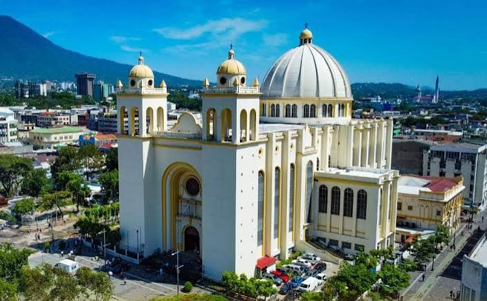
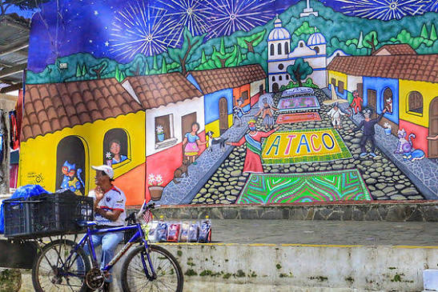
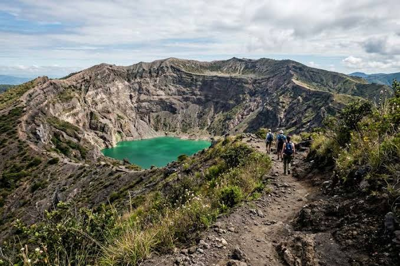
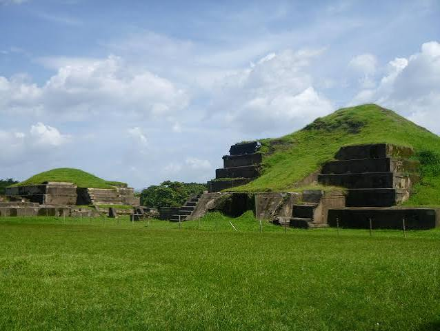
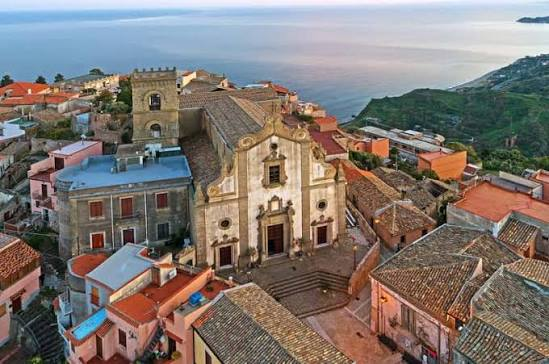
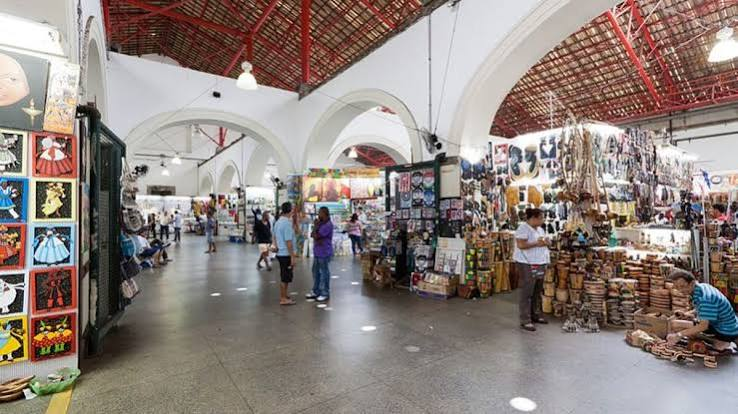
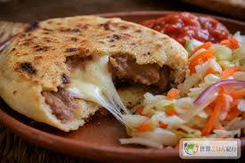
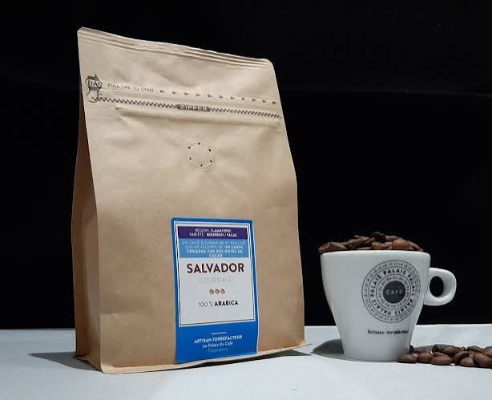
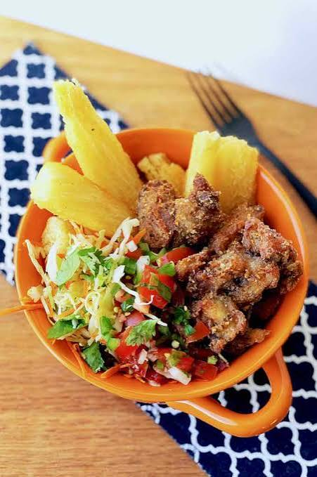
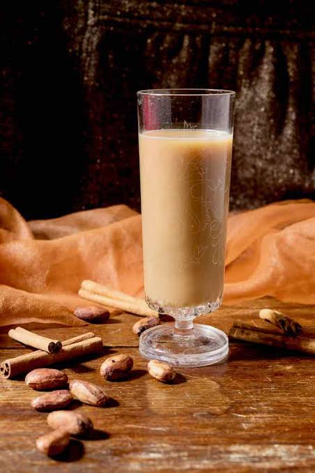

16 jours au rythme du Salvador
Loin des circuits rapides, ce voyage de 16 jours vous offre le luxe de la lenteur. Du volcan Santa Ana aux ruines mayas de Tazumal, des villages colorés de la Ruta de las Flores à la quiétude coloniale de Suchitoto, découvrez un pays chaleureux, fier de ses traditions et encore préservé du tourisme de masse.
Le voyage en un coup d'œil

🏛️ San Salvador
- Cathédrale métropolitaine
- Mercado Central & pupusas
- Musée de la Parole (MUPI)
- Quartiers bohèmes

🌸 Ruta de las Flores
- Villages colorés : Ataco, Juayúa
- Feria gastronomique
- Plantations de café
- Artisanat et murales

🌋 Volcans & Lacs
- Volcan Santa Ana (Ilamatepec)
- Lac de cratère turquoise
- Lago de Coatepeque
- Paysages à couper le souffle

🏺 Héritage Maya
- Joya de Cerén (UNESCO)
- « Pompéi des Amériques »
- Tazumal & San Andrés
- Peintures rupestres de Cacaopera

🎨 Suchitoto
- Perle coloniale du nord
- Église Santa Lucía
- Lac Suchitlán
- Galeries d'art & artisanat

🌾 L'Est authentique
- San Miguel & sa cathédrale
- Mercado de Oriente
- Culture lenca
- Traditions de l'Est
Lago de Coatepeque
Lac de cratère aux eaux turquoise, niché entre les volcans. L'un des plus beaux lacs d'Amérique centrale, idéal pour la contemplation et la baignade.
Votre itinéraire jour par jour
Semaine 1 : San Salvador & l'Ouest volcanique
Arrivée à San Salvador
Accueil à l'aéroport international Monseñor Óscar Arnulfo Romero. Transfert et installation. Dîner de bienvenue autour de pupusas, le plat national.
San Salvador historique
Visite de la Cathédrale métropolitaine (tombe de Mgr Romero), du Palacio Nacional et du Mercado Central. Après-midi au Musée de la Parole et de l'Image (MUPI) pour comprendre l'histoire récente du pays.
Artisanat & culture
Musée d'Art du Salvador (MARTE) et Mercado de Artesanías pour découvrir le travail des artisans locaux. Après-midi libre pour explorer les cafés bohèmes de la ville.
Route vers l'Ouest : Nahuizalco & Juayúa
Départ sur la Ruta de las Flores. Arrêt à Nahuizalco, célèbre pour son artisanat en fibre naturelle et son marché nocturne. Continuation vers Juayúa et sa célèbre église noire. Feria gastronomique le week-end.
Concepción de Ataco & Café
Découverte de Concepción de Ataco, village connu pour ses murales colorés et son artisanat. Visite d'une finca cafetière : de la cerise à la tasse, dégustation de l'un des meilleurs cafés d'Amérique centrale.
Volcan Santa Ana (Ilamatepec)
Randonnée matinale au sommet du volcan Santa Ana (2 381 m). Découverte du magnifique lac de cratère aux eaux vert émeraude. Vues à 360° sur la région. Retour et soirée libre.
Lago de Coatepeque
Journée de détente au bord du Lago de Coatepeque, l'un des plus beaux lacs de cratère du pays. Baignade, kayak ou simple lecture face au volcan. Ambiance paisible et ressourçante.
Semaine 2 : Mayas, Suchitoto & l'Est authentique
Joya de Cerén & Tazumal
Matinée au site UNESCO de Joya de Cerén, un village maya enseveli par les cendres volcaniques vers 600 ap. J.-C. (le « Pompéi des Amériques »). Après-midi : site de Tazumal, la plus grande pyramide maya du Salvador.
Route vers Suchitoto
Transfert vers le nord et installation à Suchitoto, joyau colonial perché au-dessus du lac Suchitlán. Balade dans les ruelles pavées, église Santa Lucía du XVIIIe siècle et galeries d'art.
Lac Suchitlán & Artisanat
Balade en bateau sur le lac Suchitlán, observation des oiseaux (dont le martin-pêcheur à collier). Après-midi : atelier d'initiation à l'artisanat local (poterie, tissage ou peinture sur soie).
Forêt de nuages : Montecristo
Excursion au Parc National Montecristo, forêt de nuages à la frontière du Guatemala et du Honduras. Randonnée parmi les orchidées, les fougères géantes et une biodiversité exceptionnelle.
Traversée vers l'Est
Route panoramique vers l'Est du pays. Découverte des paysages ruraux, des plantations de canne à sucre et arrêt dans un village traditionnel pour un déjeuner typique (yuca frita, pollo campero).
San Miguel, capitale de l'Est
Découverte de San Miguel, ville vibrante et commerçante. Visite de la Catedral de San Miguel et immersion dans le gigantesque Mercado de Oriente. Culture et traditions différentes de l'Ouest.
Perquín & Cacaopera
Route vers les montagnes de l'Est. Visite du Museo de la Revolución à Perquín (histoire du conflit). À Cacaopera, découverte des peintures rupestres laissées par le peuple Lenca il y a des siècles.
Retour à San Salvador
Retour progressif vers la capitale. Dernière soirée, dîner d'adieu dans un restaurant traditionnel. Échange sur les ressentis du voyage.
Départ
Petit-déjeuner. Transfert à l'aéroport Monseñor Óscar Arnulfo Romero. Vol retour avec des souvenirs plein les yeux et le goût du café salvadorien.
Suchitoto et le lac Suchitlán
Ancienne capitale culturelle du Salvador, Suchitoto offre une atmosphère bohème et artistique unique, surplombant un lac immense riche en biodiversité.
Gastronomie salvadorienne

🫓 Pupusas
Plat national : galettes de maïs farcies (queso, frijoles, chicharrón, loroco). À déguster avec curtido (chou fermenté) et salsa de tomate.

☕ Café de spécialité
Le Salvador produit l'un des meilleurs cafés d'Amérique centrale (Pacas, Bourbon). Dégustation dans les fincas de la Ruta de las Flores.

🥘 Plats traditionnels
Yuca frita con chicharrón, sopa de pata, tamales, pan con pavo, atol de elote (bouillie de maïs sucrée).

🍹 Boissons
Horchata salvadorienne (sésame, cacao, lait), tamarindo, ensalada (boisson aux fruits), bière Pilsener locale.
Artisanat & Traditions

🧺 Artisanat en fibre
Nahuizalco est célèbre pour son artisanat en fibre naturelle (hamacs, paniers, nattes). Travail transmis de génération en génération.

🎨 Murales & street art
Concepción de Ataco est réputée pour ses murales colorés racontant l'histoire et la culture locale.

🏺 Poterie traditionnelle
Techniques ancestrales de poterie, notamment à Suchitoto et dans les villages de l'Est.

🧵 Tissage & textiles
Tissage traditionnel sur métier à tisser, peinture sur soie et broderies artisanales.
Avant le départ & sur place
🛂 Formalités
- Passeport : Valable 6 mois après retour
- Visa : Aucun visa pour les Français (90 jours)
- Taxe de sortie : 32 $US (généralement incluse dans le billet)
- Assurance : Fortement recommandée
💵 Monnaie
- Dollar US : Monnaie officielle depuis 2001
- Bitcoin : Monnaie légale depuis 2021 (premier pays au monde)
- Cartes : Acceptées dans les villes, prévoir du cash pour les marchés et villages
- Pourboires : 10% appréciés dans les restaurants
🌡️ Climat & Équipement
- Climat : Tropical, saison sèche (nov-avril) idéale
- Températures : 25-30°C en plaine, plus frais en altitude (Santa Ana, Montecristo)
- Équipement : Chaussures de marche, crème solaire, répulsif, veste légère pour les volcans
🔒 Sécurité
- Le Salvador a considérablement amélioré sa sécurité ces dernières années
- Éviter les quartiers sensibles de San Salvador la nuit
- Ne pas exposer de bijoux ou objets de valeur
- Privilégier les transports organisés ou privés
Votre itinéraire sur la carte
De San Salvador à San Miguel, en passant par la Ruta de las Flores, Suchitoto et les sites mayas : cliquez sur chaque point doré pour découvrir les étapes de votre voyage.
Bon séjour au Salvador !
16 jours d'immersion authentique · Slow travel · Culture & Nature
Parlons de votre projet →